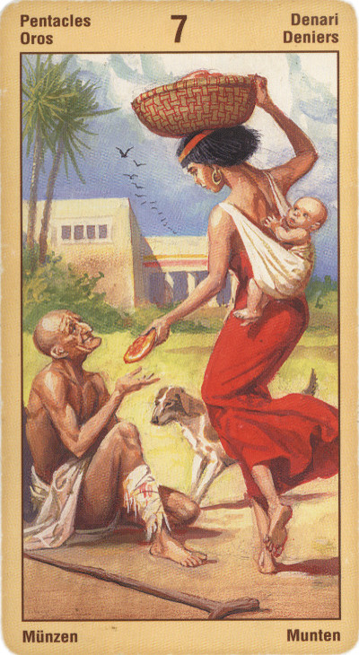

Семёрка Пентаклей
Значение: Имей терпение, говорит эта карта. Всякому делу требуется время, чтобы созреть. Если ты посеял доброе, то добрыми будут и всходы.
Эта карта олицетворяет терпение и медленный рост. Она рекомендует не торопиться, найдя для себя многообещающий шанс, а всесторонне обдумать его, дав себе время, прежде чем принимать решение: пусть семя выпустит росток, покажет свои листья и цветы. Если мы не будем торопить события и рвать плоды еще зелеными, то сможем достичь успеха.
Провал, Несостоятельность.
На карте таро изображен человек, пришедший на возделанный им виноградник и не обнаруживший там плодов. Жизнь лишает человека результата для того, чтобы он двигался дальше. Достижение цели никогда не приносит полного удовлетворения: человек всегда хочет и ждет от жизни чего-то большого. Это утрата конечного ради бесконечного. Истинная цель труда остается ему неведома, так как выходит за пределы его личности и принадлежит вечному процессу преобразовательной деятельности человека в мире.
Ловушка. Погрязнуть в бессмысленной работе, не имея сил остановиться.
Семерка Пентаклей, в отличие от шести предшествующих ей знаков, символизирует не только материальный достаток и стремление к выгоде. Этот Аркан дает представление о более возвышенных наклонностях вашей натуры.
Итак, если в личном раскладе выпала Семерка Пентаклей, вы воспринимаете свою работу не как способ «заколотить» побольше денег, но как возможность реализовать себя в этой сфере жизни.
Похожим является и ваше отношение к окружающим: вы не подходите к ним с грубой меркой (может быть этот человек полезен или же нет), но обращаете внимание на их внутренние достоинства. Вы никогда не берете без отдачи - будь то деньги или же услуги. При этом, оказав кому-то помощь, не считаете этого человека своим вечным должником.
При гадании на ситуацию Семерка Пентаклей предсказывает благоприятный для вас ход событий, однако предупреждает, что придется немало потрудиться ради достижения желанной цели. Не нужно прибегать к хитрости - все и так решится в вашу пользу.
Изображен человек пожинающий плоды своих трудов. Карта заслуженной прибыли. Постепенный рост дел или себя как личности. Выгода, прибыль. Удача. Добое отношение к человеку. Займы, продажи. Благоприятное время для строительства и занятий земледелием.
В перевернутом виде: Вы можете испытывать чувство неудовлетворенности своей работой или каким-либо проектом. Вам может казаться, что вас недостаточно наградили за проделанную работу и приложенные усилия.
Может указывать на размолвки, скандалы с супругами или партнерами, вероломство со стороны напарника.
Партнер, не оправдывающий надежд, не делающий равноценный вклад в общее дело, - еще один мотив, связанный с семеркой пентаклей, прямой либо перевернутой.
В отрицательном значении: неразумные расходы, невозвращение долгов, потери, грабеж. Ссора, измена, проигрыш, бесполезный труд.